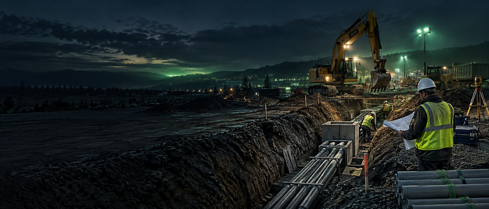
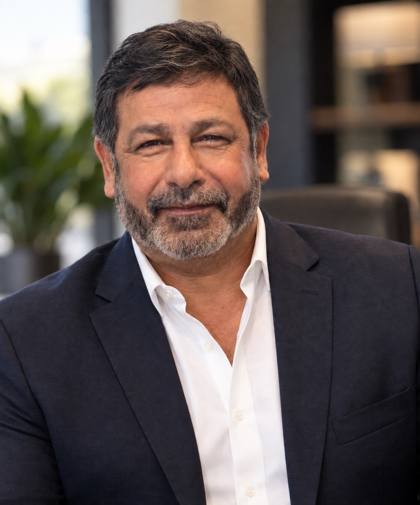
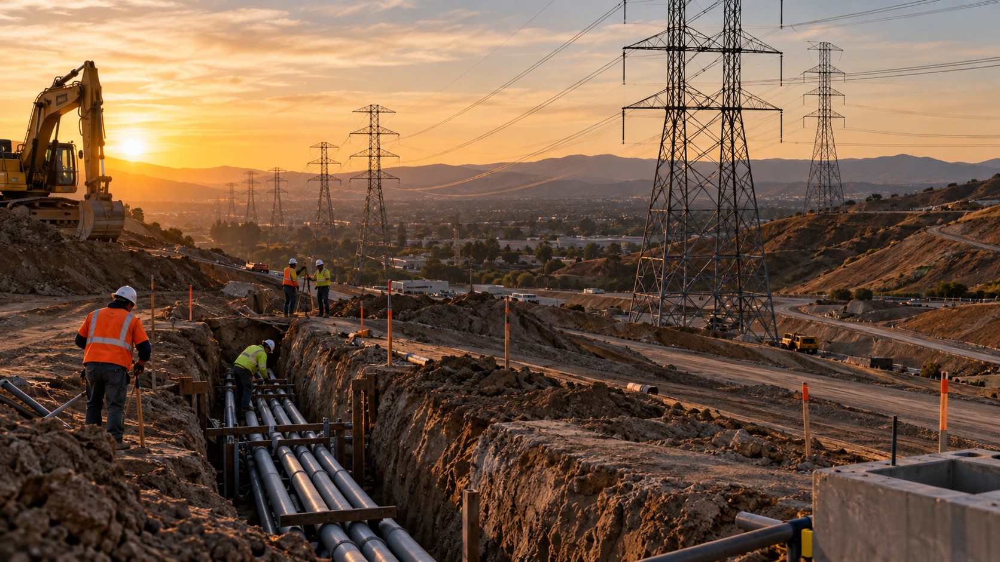

Experience-led
Guidance grounded in decades of real construction conditions, not theory alone.

Construction consulting & project performance
42 years of construction expertise. Stronger planning. Stronger margins.
Practical guidance for contractors and construction leaders who need clearer project control, better production, and accountable execution.
The Zevada approach
Zevada Legacy Consulting helps construction companies strengthen the decisions that drive project performance—from project planning on paper to the work taking place in the trench.
Led by Javier Zevada, the firm brings more than 42 years of practical civil construction experience to contractors, project managers, superintendents, and upper-level management.
Meet Javier ZevadaGuidance grounded in decades of real construction conditions, not theory alone.
Clear observations, direct communication, and recommendations people can act on.
Every engagement connects practical work in the field to stronger management decisions.
Mission & core beliefs
Zevada Legacy Consulting is committed to helping construction teams perform with greater clarity, accountability, and confidence—from the field to the executive table.
We stay engaged with the work, the people, and the outcomes that matter to each project.
We communicate honestly, protect confidentiality, and provide observations that management can trust.
We bring disciplined follow-through and practical effort to every recommendation and every conversation.
What we do
Focused support for the places where planning, production, people, and profitability meet.
Review labor, materials, equipment, subcontractors, and project expenses to identify discrepancies, waste, and overrun risk.
Review project estimates and production assumptions to uncover overlooked costs, operational risks, and change-order exposure.
Support underground utility coordination, electrical and communication infrastructure, conduit, duct banks, trenching, layouts, and field production planning.
Establish practical workflows, responsibilities, site readiness, production planning, and communication between office and field.
Help crews and supervisors understand production expectations, improve communication, and execute with greater consistency.
Strengthen foremen, superintendents, project managers, and emerging leaders through practical project-control habits.
Provide objective observations on productivity, role alignment, strengths, gaps, and training needs.
Align labor, equipment, materials, and milestones with schedules that reflect actual field conditions.
Give upper management clear findings on production, workforce, budget, scheduling, bottlenecks, and next actions.
Identify unsafe practices, process weaknesses, and accountability gaps, with practical recommendations for safer operations.

Leadership & perspective
A civil construction leader grounded in the field—bringing 42 years of experience across heavy civil infrastructure, underground utilities, transmission, refinery, airport, and water projects.
Across leadership roles with HWI, Arizona Pipeline Company, and Underground Construction Company, Javier Zevada has led crews, layouts, schedules, safety programs, and division-level operations in complex, high-consequence environments. His experience connects precise field execution with the project controls and communication leaders need to make better decisions.
Connect with Javier on LinkedInCredentials: OSHA 30 Certified · Competent Person Trained · Heavy Equipment Trained
What changes
Practical intervention designed around the outcomes your team can see, measure, and sustain.
Surface overlooked expenses, production assumptions, and risks before they become margin problems.
Discuss cost managementAlign roles, information, schedules, and accountability from project startup through closeout.
Discuss project supportTurn practical training and objective observations into stronger production and communication.
Discuss field supportIdentify process weaknesses and reinforce safety awareness with clear, usable recommendations.
Discuss safety supportProject support
Support is built around the operating realities of construction companies and the people accountable for project outcomes.
Talk through your projectExperience library
Selected experience from four decades in the field—ready to be expanded with approved project details, photographs, and measurable outcomes.

500KV TRANSMISSIONServed as a foundational supervisor on the Chino Hills 500KV power transmission project, coordinating underground civil work, precise layouts, elevations, and field execution in a complex, high-voltage environment.
Discuss project controlsDirected underground civil scopes in refinery locations and specialized airport fuel-system infrastructure, including mainline work, facility tie-ins, utility layouts, grading, and safety-focused field coordination.
Discuss field supportLed pipeline, transmission, distribution, water-line, and mobile-home infrastructure work across multiple regions, using elevation readings, benchmark grading, flow lines, tie-ins, and heavy-equipment coordination to move projects forward.
Discuss operational supportHow we work
Every engagement starts with understanding the operation, the project, and the people doing the work.
Understand your goals, constraints, and immediate concerns.
Review the information, workflow, and conditions that shape performance.
Assess field execution, workforce, budget, safety, or production needs.
Turn observations into clear, prioritized recommendations.
Support implementation and measure progress over time.
Start a conversation
Tell us what you’re working through. We’ll follow up to understand where practical experience can help.